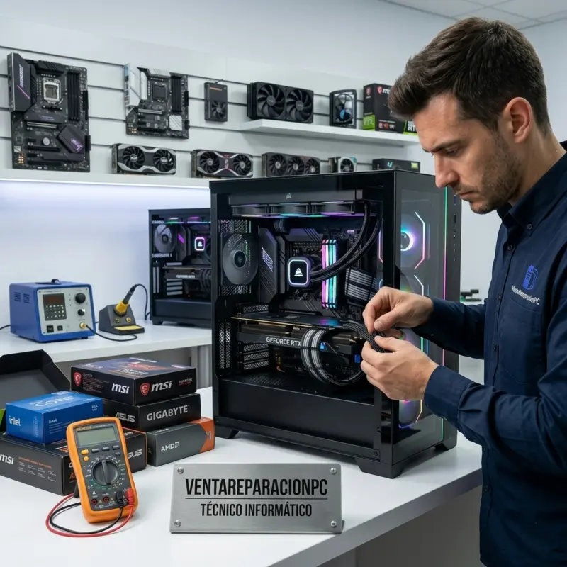
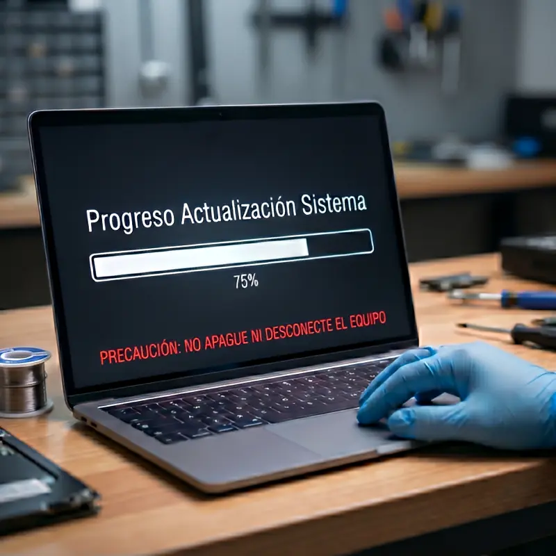

Servicio 07 de 07
Conversión de documentos
Cambiamos de formato documentos, fotos, audio y vídeo.

- Formatos
- DOC, PDF, XLS, PPT, JPG, PNG…
- Precio
- Consúltanos
Te ayudamos a abrir o cambiar de formato los archivos que no te abren o no puedes enviar tal cual: de PDF a Word, de Word a PDF, de imágenes a JPG o PNG, de vídeo a audio…
Qué incluye
- Documentos: PDF, Word (DOC/DOCX), Excel, PowerPoint…
- Imágenes: JPG, PNG, GIF, WEBP, RAW…
- Audio y vídeo: MP3, WAV, MP4, MKV…
- Comprobación del resultado antes de entregarlo
Otros servicios

MantenimientoLimpieza interna, pasta térmica y puesta a punto del sistema. Desde 70 € y plazo aproximado desde 24 h.
Desde 70 €
Actualización de PCMás RAM, SSD/NVMe o gráfica nueva, con la compatibilidad comprobada.
Con presupuesto previo
Actualización de BIOSFirmware al día para admitir piezas nuevas y ganar estabilidad. 30 €.
30 €